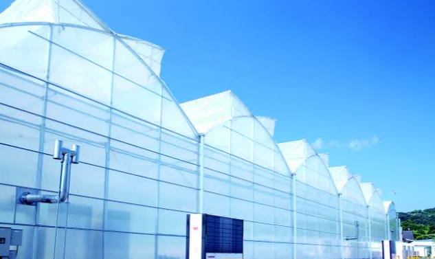

Buscamos personal responsable en la Comunidad San Juan del Inca (El Inca, Pimampiro, Imbabura) que conozca la realidad del trabajo bajo cubierta: cosechar, deñavitar (desnabar) y poner abono a 29 °C de calor constante.

En San Juan del Inca (Pimampiro), afuera corre aire fresco de montaña, pero dentro de las naves de invernadero el plástico retiene el calor a 29 °C constantes para que la planta de tomate produzca bien.
No queremos que vengas sin saberlo: buscamos personas acostumbradas al calor húmedo bajo cubierta y con buen ritmo de trabajo.
Si ya conoces estas 8 labores del cultivo de tomate bajo cubierta en Imbabura, este puesto es para ti.
Recolección cuidadosa en punto pintón y maduro, sin golpear el fruto ni maltratar los racimos, llenando gavetas limpias.
Retiro oportuno de brotes axilares (chupones/nabos) y despunte de guía para que la fuerza vaya directo al engrose del tomate.
Aplicación medida de abono granulado u orgánico al pie de la mata y revisión de goteros y mangueras de fertirriego.
Enredar y guiar el tallo en la piola, colocar anillos de sujeción y descolgar las matas conforme crecen en altura.
Quitar hojas viejas o enfermas de la parte baja para que circule el aire y sacar todo residuo fuera del invernadero.
Vibración suave de los racimos florales en las horas de calor para asegurar el cuaje completo y frutos parejos.
Revisión temprana de mosca blanca, ácaros o polilla en las hojas y cambio de trampas cromáticas amarillas y azules.
Subir y bajar cortinas laterales y cenitales según el sol y el viento para mantener la temperatura ideal del cultivo.
El Inca • Cantón Pimampiro, Provincia de Imbabura, Ecuador (`0.344156, -77.960175`)
Completa tus datos reales. Al finalizar, podrás enviar tu ficha directamente por WhatsApp al +593 99 779 2661.
Toca el botón verde para enviarla directo por WhatsApp al +593 99 779 2661.